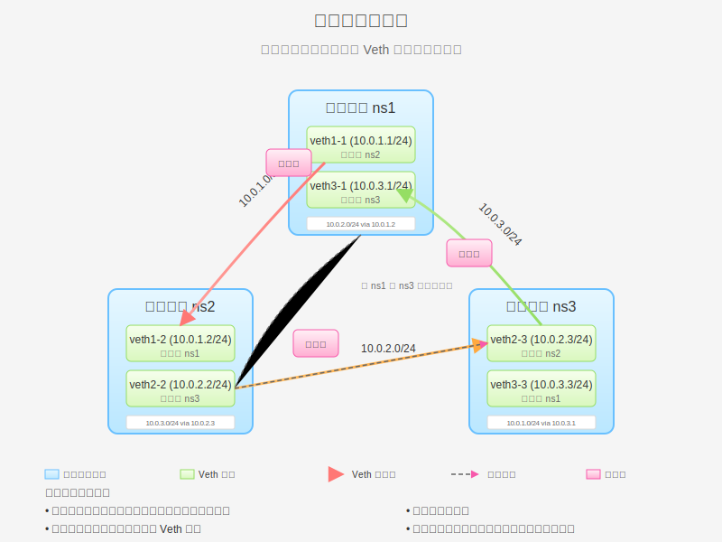

Veth 对三角形网络拓扑
三角形网络拓扑是一种所有节点都直接相互连接的网络结构。在 Linux 网络命名空间和 Veth 对的环境中，这种拓扑提供了最短的通信路径和最高的冗余性。本页将详细介绍三角形拓扑的原理、实现方法和实际应用场景。

三角形拓扑原理
三角形拓扑是一种网络结构，其中所有节点都直接相互连接，形成一个完全图。在 Linux 网络命名空间的环境中，这意味着每个命名空间都通过 Veth 对直接连接到其他所有命名空间。
三角形拓扑的特点
- 直接连接：所有节点之间都有直接连接，无需中转
- 最短路径：任意两个节点之间的通信都是直接的，延迟最低
- 高冗余性：没有单点故障，任何一个节点故障不会影响其他节点之间的通信
- 连接数量多：对于 n 个节点，需要 n(n-1)/2 个连接
- 扩展性差：随着节点数量增加，连接数量呈指数增长
- 配置复杂：每个新节点都需要与所有现有节点建立连接
与其他拓扑的比较
与星型拓扑相比，三角形拓扑提供了更短的通信路径和更高的冗余性，但连接数量更多，配置更复杂。与网桥拓扑相比，三角形拓扑提供了更好的隔离性和更低的延迟，但配置更复杂。
| 特性 |
三角形拓扑 |
星型拓扑 |
网桥拓扑 |
| 连接数量 |
n(n-1)/2 |
n |
n |
| 配置复杂度 |
高 |
中等 |
低 |
| 扩展性 |
差 |
好 |
好 |
| 通信延迟 |
最低 |
中等 |
中等 |
| 冗余性 |
最高 |
低 |
低 |
三角形拓扑在容器网络中的应用
三角形拓扑在容器网络中有多种应用场景：
高可用性集群
在需要高可用性的小型集群中，三角形拓扑可以确保任何一个节点故障不会影响其他节点之间的通信。例如，Kubernetes 控制平面的三个节点可以使用三角形拓扑相互连接，确保控制平面的高可用性。
分布式数据库
在分布式数据库系统中，核心节点之间通常需要直接通信以保持数据一致性。三角形拓扑可以提供最短的通信路径和最高的冗余性，适合小型分布式数据库集群。
实时通信系统
在实时通信系统中，低延迟是关键要求。三角形拓扑提供了最短的通信路径，适合需要低延迟的实时通信系统。
边缘计算
在边缘计算场景中，少量的边缘节点可能需要直接相互通信，同时也需要与云服务通信。三角形拓扑可以满足这种需求。
基本实验：创建三角形拓扑
在这个实验中，我们将创建三个网络命名空间，并使用 Veth 对将它们两两连接，形成一个三角形拓扑。
实验目标
创建如下拓扑：
- 三个网络命名空间：ns1、ns2、ns3
- ns1 和 ns2 通过 veth1-1/veth1-2 连接
- ns2 和 ns3 通过 veth2-2/veth2-3 连接
- ns3 和 ns1 通过 veth3-3/veth3-1 连接
- 每个命名空间都可以直接与其他两个命名空间通信
实验步骤
# 步骤 1：创建三个网络命名空间
sudo ip netns add ns1
sudo ip netns add ns2
sudo ip netns add ns3
# 验证创建结果
ip netns list
# 步骤 2：创建三对 Veth 设备
# ns1 和 ns2 之间的 Veth 对
sudo ip link add veth1-1 type veth peer name veth1-2
# ns2 和 ns3 之间的 Veth 对
sudo ip link add veth2-2 type veth peer name veth2-3
# ns3 和 ns1 之间的 Veth 对
sudo ip link add veth3-3 type veth peer name veth3-1
# 验证创建结果
ip link show type veth
# 步骤 3：将 Veth 设备分配到相应的网络命名空间
# ns1 的设备
sudo ip link set veth1-1 netns ns1
sudo ip link set veth3-1 netns ns1
# ns2 的设备
sudo ip link set veth1-2 netns ns2
sudo ip link set veth2-2 netns ns2
# ns3 的设备
sudo ip link set veth2-3 netns ns3
sudo ip link set veth3-3 netns ns3
# 验证分配结果
sudo ip netns exec ns1 ip link show
sudo ip netns exec ns2 ip link show
sudo ip netns exec ns3 ip link show
# 步骤 4：配置 IP 地址
# ns1 的设备
sudo ip netns exec ns1 ip addr add 10.0.1.1/24 dev veth1-1
sudo ip netns exec ns1 ip addr add 10.0.3.1/24 dev veth3-1
sudo ip netns exec ns1 ip link set veth1-1 up
sudo ip netns exec ns1 ip link set veth3-1 up
sudo ip netns exec ns1 ip link set lo up
# ns2 的设备
sudo ip netns exec ns2 ip addr add 10.0.1.2/24 dev veth1-2
sudo ip netns exec ns2 ip addr add 10.0.2.2/24 dev veth2-2
sudo ip netns exec ns2 ip link set veth1-2 up
sudo ip netns exec ns2 ip link set veth2-2 up
sudo ip netns exec ns2 ip link set lo up
# ns3 的设备
sudo ip netns exec ns3 ip addr add 10.0.2.3/24 dev veth2-3
sudo ip netns exec ns3 ip addr add 10.0.3.3/24 dev veth3-3
sudo ip netns exec ns3 ip link set veth2-3 up
sudo ip netns exec ns3 ip link set veth3-3 up
sudo ip netns exec ns3 ip link set lo up
# 验证配置
sudo ip netns exec ns1 ip addr
sudo ip netns exec ns2 ip addr
sudo ip netns exec ns3 ip addr
# 步骤 5：配置路由
# ns1 的路由
sudo ip netns exec ns1 ip route add 10.0.2.0/24 via 10.0.1.2
# ns2 的路由
sudo ip netns exec ns2 ip route add 10.0.3.0/24 via 10.0.2.3
# ns3 的路由
sudo ip netns exec ns3 ip route add 10.0.1.0/24 via 10.0.3.1
# 验证路由配置
sudo ip netns exec ns1 ip route
sudo ip netns exec ns2 ip route
sudo ip netns exec ns3 ip route
# 步骤 6：测试连通性
# 从 ns1 测试
sudo ip netns exec ns1 ping -c 3 10.0.1.2 # 直接连接到 ns2
sudo ip netns exec ns1 ping -c 3 10.0.3.3 # 直接连接到 ns3
sudo ip netns exec ns1 ping -c 3 10.0.2.3 # 通过 ns2 连接到 ns3
# 从 ns2 测试
sudo ip netns exec ns2 ping -c 3 10.0.1.1 # 直接连接到 ns1
sudo ip netns exec ns2 ping -c 3 10.0.2.3 # 直接连接到 ns3
sudo ip netns exec ns2 ping -c 3 10.0.3.3 # 通过 ns3 连接到 ns3
# 从 ns3 测试
sudo ip netns exec ns3 ping -c 3 10.0.2.2 # 直接连接到 ns2
sudo ip netns exec ns3 ping -c 3 10.0.3.1 # 直接连接到 ns1
sudo ip netns exec ns3 ping -c 3 10.0.1.1 # 通过 ns1 连接到 ns1
# 步骤 7：使用 traceroute 查看数据包路径
# 安装 traceroute（如果尚未安装）
sudo apt-get update
sudo apt-get install -y traceroute
# 从 ns1 到 ns3 的路径（直接路径）
sudo ip netns exec ns1 traceroute 10.0.3.3
# 从 ns1 到 ns3 的路径（通过 ns2）
sudo ip netns exec ns1 traceroute 10.0.2.3
# 步骤 8：清理实验环境
sudo ip netns delete ns1
sudo ip netns delete ns2
sudo ip netns delete ns3
# 验证清理结果
ip netns list
通过这个实验，我们成功创建了一个三角形拓扑，使三个网络命名空间可以相互直接通信。这种拓扑适用于小规模网络，但随着命名空间数量的增加，配置复杂度会迅速增加。
高级实验：带备份路由的三角形拓扑
在基本的三角形拓扑中，我们只配置了一条路由路径。在这个高级实验中，我们将配置备份路由，以提高网络的可靠性。
实验目标
创建如下拓扑：
- 三个网络命名空间：ns1、ns2、ns3
- 与基本实验相同的连接结构
- 为每个命名空间配置主路由和备份路由
- 模拟链路故障，测试备份路由的自动切换
实验步骤
# 步骤 1-4：与基本实验相同，创建命名空间、Veth 对并配置 IP 地址
# 步骤 5：配置主路由和备份路由
# ns1 的路由
sudo ip netns exec ns1 ip route add 10.0.2.0/24 via 10.0.1.2 metric 100 # 主路由
sudo ip netns exec ns1 ip route add 10.0.2.0/24 via 10.0.3.3 metric 200 # 备份路由
# ns2 的路由
sudo ip netns exec ns2 ip route add 10.0.3.0/24 via 10.0.2.3 metric 100 # 主路由
sudo ip netns exec ns2 ip route add 10.0.3.0/24 via 10.0.1.1 metric 200 # 备份路由
# ns3 的路由
sudo ip netns exec ns3 ip route add 10.0.1.0/24 via 10.0.3.1 metric 100 # 主路由
sudo ip netns exec ns3 ip route add 10.0.1.0/24 via 10.0.2.2 metric 200 # 备份路由
# 验证路由配置
sudo ip netns exec ns1 ip route
sudo ip netns exec ns2 ip route
sudo ip netns exec ns3 ip route
# 步骤 6：测试连通性
# 从 ns1 测试
sudo ip netns exec ns1 ping -c 3 10.0.2.3 # 应该通过主路由 10.0.1.2
# 步骤 7：模拟链路故障
# 关闭 ns1 和 ns2 之间的链路
sudo ip netns exec ns1 ip link set veth1-1 down
sudo ip netns exec ns2 ip link set veth1-2 down
# 测试备份路由
sudo ip netns exec ns1 ping -c 3 10.0.2.3 # 应该通过备份路由 10.0.3.3
# 查看路由变化
sudo ip netns exec ns1 ip route
# 步骤 8：恢复链路
sudo ip netns exec ns1 ip link set veth1-1 up
sudo ip netns exec ns2 ip link set veth1-2 up
# 测试路由是否恢复
sudo ip netns exec ns1 ping -c 3 10.0.2.3 # 应该再次通过主路由 10.0.1.2
# 查看路由变化
sudo ip netns exec ns1 ip route
# 步骤 9：清理实验环境
sudo ip netns delete ns1
sudo ip netns delete ns2
sudo ip netns delete ns3
# 验证清理结果
ip netns list
通过这个高级实验，我们演示了如何在三角形拓扑中配置备份路由，以提高网络的可靠性。当主路由出现故障时，流量会自动切换到备份路由，保证网络的连通性。
扩展实验：四节点完全连接拓扑
三角形拓扑是三个节点的完全连接拓扑。在这个扩展实验中，我们将创建一个四节点的完全连接拓扑，即每个节点都与其他所有节点直接连接。
实验目标
创建如下拓扑：
- 四个网络命名空间：ns1、ns2、ns3、ns4
- 每个命名空间都与其他三个命名空间直接连接
- 总共需要 6 对 Veth 设备（n(n-1)/2 = 4*3/2 = 6）
这个实验的详细步骤将在 完全图网络拓扑 页面中介绍。
三角形拓扑的性能分析
三角形拓扑在性能方面有其独特的优势和劣势。以下是一些关键性能指标的分析：
延迟
三角形拓扑提供了最短的通信路径，任意两个节点之间都有直接连接，因此延迟最低。这对于对延迟敏感的应用非常有利。
吞吐量
由于每个节点都有多个网络接口，三角形拓扑可以提供较高的吞吐量。不同节点之间的通信可以并行进行，不会相互干扰。
可靠性
三角形拓扑提供了最高的冗余性，任何一个链路故障都不会影响整体网络的连通性。这使得三角形拓扑在可靠性方面表现出色。
扩展性
三角形拓扑的主要劣势是扩展性差。随着节点数量的增加，连接数量呈指数增长（n(n-1)/2），配置复杂度也随之增加。因此，三角形拓扑通常只适用于小规模网络。
资源消耗
三角形拓扑需要为每个节点配置多个网络接口，这会消耗更多的系统资源。在资源受限的环境中，这可能是一个问题。
总体而言，三角形拓扑适合对延迟和可靠性要求高、规模较小的网络环境。